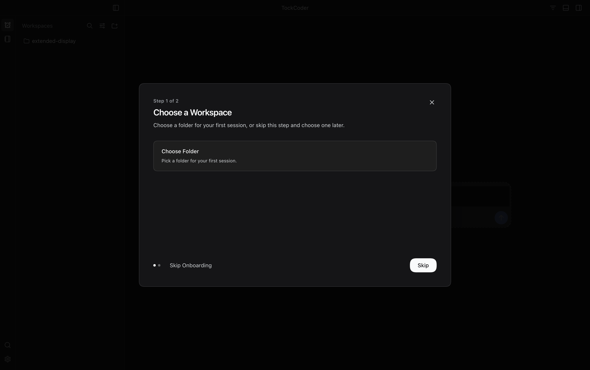
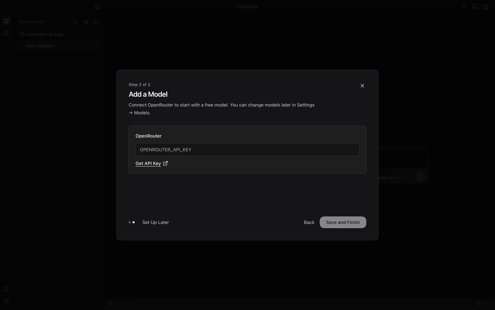

01 · Choose a Workspace
Step 1 of 2 · September 28, 2026
02 · Add a Model
Step 2 of 2 · No API Key Yet
Two practical steps: optionally choose a folder, then add a model. These are real Desktop captures from isolated new-user test profiles with no saved key; your settings were not changed. Click any image to view it at full resolution.
1512 × 949 CSS Pixels · 2× Scale · 3024 × 1898 PNG · Built-In Dark Theme · No Active Skin

